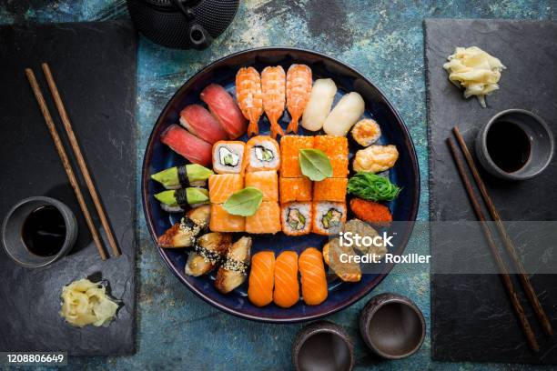

document 영역에서 사용되는 이벤트를 정의
-
마우스 이벤트 : click(), focus(), input(), change(), mouseover()
mouseout(), scroll() ...
-
키보드 이벤트 : keyDown(), keyPress(), keyUp()
-
기타이벤트 : prevenDefault() : 사용한 이벤트 취소?
target, submit()
-
addEventListener('evenName',callback function);
메서드를 사용하여 구현하는 것을 권장
onclick 보다 addEventListener를 권장함, 사유로는 여러 중복 이벤트를 발생시킬수 있기 때문
-
이벤트 중복 부여 가능 여부로 onclick과 addEventListener 사용를 판별하면 될 듯?
추가로 확장성을 고려하면 리스너 쓰는게 맞음 ㅇㅇ
